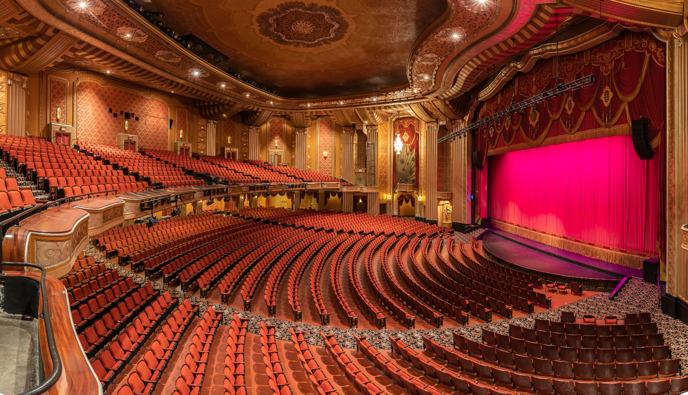

Warner Theatre переносит историю развлечений в 21 век с JBL Professional VTX Line Arrays
ЭРИ, Пенсильвания — Чтобы обеспечить новые постановки и гастролирующих артистов удобной для зрителей системой звукоусиления с отличным покрытием и качеством звука, менеджер по производству Warner Theatre Райан Пэтси объединился с консультантом Дэвидом Бейтманом, CTS-D, из Acentech и интегратором Тоддом Пандером из Dobil Laboratories, чтобы оснастить исторический театр новыми Линейные массивы и сабвуферы серии JBL VTX.
Построенный по заказу в 1929 году тогдашней компанией Warner Brothers Productions и открытый в 1931 году, театр Уорнер является культовой достопримечательностью, расположенной в Эри, штат Пенсильвания. Это заведение функционировало как кинотеатр, пока в 1976 году не было продано городу Эри и преобразовано в центр исполнительских искусств. Помимо того, что театр Уорнер является родиной филармонии Эри, балета Лейк-Эри и бродвейского сериала "Эри", в нем регулярно проводятся концерты и представления гастролирующих артистов, таких как Кенни Роджерс, Джерри Сайнфелд, ZZ Top, Кенни Джи, Элис Купер, Роб Зомби и многих других.
Чтобы обеспечить проведение мероприятий мирового уровня для такого широкого спектра мероприятий, оператор площадки Erie Events провел масштабную реконструкцию здания, чтобы улучшить качество обслуживания во время простоя из-за пандемии COVID-19. В рамках реконструкции организаторы мероприятия хотели установить новую домашнюю аудиосистему, которая могла бы поддерживать большинство предстоящих постановок. Менеджер по производству театра Райан Пэтси в партнерстве с консультантом Дэвидом Бейтманом из Acentech и Тоддом Пандером из Dobil оснастил исторический театр современным решением для усиления живого звука, включающим динамики серии JBL VTX и усилители серии Crown I-Tech.
“Они искали звуковую систему для помещения, которая могла бы удовлетворить как можно больше райдеров гастролирующих групп”, - сказал Бейтман. “Erie Events предлагала больше масштабных шоу в стиле Бродвея с участием автобусов и грузовиков, и они хотели иметь возможность способствовать этому. Система JBL удобна для пользователя благодаря распознаванию названий, производительности и долговечности. Если бы JBL все эти годы делала что-то не так, её бы здесь не было столько лет спустя. Если вы видите JBL в райдере, то знаете, что звук будет хорошим”.
“В прошлом у меня был большой опыт работы с JBL”, - говорит Пэтси. “Это настолько удобно для райдеров, насколько это возможно, и, по моему опыту, делает группы счастливыми на райдерах. У меня есть уверенность в том, что JBL обеспечивает наибольшую отдачу за каждый вложенный доллар”.
Чтобы обеспечить широкий и сбалансированный охват, мощность и четкость звука, основная левая и правая колонки состоят из 18 линейных динамиков JBL VTX A8, подвешенных по девять с каждой стороны. VTX A8 объединяет два 8-дюймовых низкочастотных динамика, четыре 3,5-дюймовых среднечастотных динамика и два 2- дюймовых высокочастотных динамика в одном низкопрофильном корпусе, чтобы обеспечить постановкам в Warner Theatre непревзойденную производительность, экономичность и постоянный охват в 110 градусов по горизонтали. Кроме того, команда установила четыре сабвуфера JBL VTX B18, размещенных на земле, для усиления низких частот по всему залу.
“A8 обеспечивают чистоту и прозрачность звука. У нас не было никаких претензий к новой системе”, - сказала Пэтси. “Раньше у нас были жалобы, в основном из-за того, что мы давали концерты за один день, и у них не было времени должным образом настроить систему под прицелом. Мы отказались от этого шага во многих наших небольших выступлениях. Нам просто нужно подключить систему, и она будет отлично охватывать пространство, обеспечивая разборчивость во всем помещении”.
В дополнение к VTX A8 и B18, динамики JBL AC25 и AC26 служат соответственно в качестве фронтальных и балконных динамиков. Наконец, усилители Crown I-Tech 4x3500 обеспечивают всю систему чистым и достаточным питанием, в то время как подключаемый модуль Crown для систем QSC QSYS позволяет персоналу легко контролировать состояние всех усилителей удаленно, не выходя из дома.
“Плагин Crown для QSys действительно классный”, - говорит Пэтси. “Я могу вывести всё на сенсорный дисплей в FOH, который легко виден любому члену техперсонала, так что мы можем просто взглянуть и убедиться, что запускаем систему в нужных параметрах, ничего не нарушая”
Пэтси отмечает, что новая система JBL VTX помогает штатной команде Warner Theatre поддерживать подавляющее большинство постановок, не прибегая к услугам сторонних прокатных компаний.
“Поскольку система JBL VTX настолько удобна для райдеров, более широкий круг исполнителей примет ее и будет играть на ней”, - сказала Пэтси. “В конечном счете это экономит промоутеру немалую сумму денег. Аренда офиса на день стоит тысячи долларов, независимо от того, что это такое. Мы сделали эту инвестицию и взимаем с промоутера меньшую плату, чем с компаний по прокату. Это беспроигрышный вариант, потому что промоутер экономит деньги, а нам это приносит доход”.
В тех редких случаях, когда гастролёры настаивает на том, чтобы привезти свою собственную звуковую систему, инновационный механизм автоматической блокировки оснастки VTX A8 помогает команде Patsy быстро оптимизировать процессы демонтажа и последующего повторного развертывания, экономя время и деньги промоутера шоу.
“Нам требуется меньше часа, чтобы полностью снять ПА”, - сказала Пэтси. “Когда промоутеры здесь платят за каждую минуту работы ребят на часах, это огромная экономия времени, поскольку массивы VTX так быстро включаются и выключаются”.
Консультант Дэвид Бейтман отметил важность согласования выбора динамиков с акустикой помещения при проектировании системы и высоко оценил VTX A8 как идеально подходящий для кинотеатра Warner.
“Система должна соответствовать акустике самого помещения — если эти две вещи не работают вместе, это может принести больше вреда, чем пользы”, - сказал Бейтман. “Если коробка слишком велика для комнаты, она может быть слишком громоздкой и звучать ужасно. Я видел это раньше. Именно этот JBL A8 идеально подойдет для помещения”.
После двухлетнего закрытия театр Warner вновь открылся 23 января 2022 года выступлением филармонического оркестра Эри. И Пэтси, и Бейтман рассказали об удовлетворенности всех заинтересованных сторон качеством звука и охватом, обеспечиваемым новой системой JBL VTX.
“У JBL есть несколько очень довольных клиентов здесь, в театре Warner”, - сказала Пэтси. “Группы и съемочные группы по-настоящему счастливы, когда приезжают и видят систему JBL VTX в действии. Они знают, что их артист будет доволен звуком, который получит их аудитория. Мы в восторге от этого. Мы не слышали от всех ничего, кроме комплиментов по поводу того, насколько хорошо звучит наша новая система VTX”.
“Люди, с которыми я разговаривал на церемонии открытия, включая концертмейстера филармонии Эри, сказали мне, что это звучит великолепно”, — сказал Бейтман. “Для моих ушей это звучало невероятно, это действительно было так. Я прошелся по залу, сделал несколько замеров с переднего ряда, заднего ряда и верхнего балкона. Уровень покрытия во всем пространстве составлял +3 дБ или -3 дБ на каждом сиденье, что является стандартом для равномерности звукового покрытия. Это было то, что нужно было услышать. Все участники мероприятия и команда консультантов были довольны тем, как все обернулось”
Пэтси отметила, что Тодд Пандер из Dobil сыграл значительную роль в выборе VTX A8, когда динамик, изначально указанный в первоначальном дизайне Bateman, оказалось невозможным приобрести из-за проблем с глобальной цепочкой поставок.
“Тодд Пандер из Dobil проделал отличную работу по соблюдению правил”, - сказала Пэтси. “Поскольку у меня есть опыт работы с живым звуком и интеграцией, я была более требовательной, чем среднестатистический клиент. Он проделал отличную работу, пройдя грань между тем, что было изначально оговорено, и адаптацией, чтобы внести изменения в то, что нам действительно было нужно в месте проведения. Все получилось великолепно во многом благодаря мастерству, которое привнес Тодд”.
Бейтман также высоко оценил роль эксперта HARMAN по аудиосистеме Кита Каджиано в окончательной настройке системы JBL VTX в Warner Theatre. Бейтман также высоко оценил стремление HARMAN обеспечить соответствие окончательного решения видению Бейтмана в отношении места проведения.
“Приятно, что JBL была там до конца”, - сказал Бейтман. “В выходные, когда состоялось грандиозное повторное открытие, Кит Каджиано из JBL настраивал и следил за тем, чтобы все было правильно с точки зрения JBL. Они следили за тем, чтобы он был правильно подвешен, правильно нацелен, правильно настроен, с точки зрения производителя. Они общались со мной по пути. Были проблемы с цепочкой поставок, которые в конечном итоге привели к изменению того, с какой коробкой мы работали. JBL постоянно связывалась со мной на каждом шагу. Они действительно хотели узнать мое мнение, потому что верят, что я знаю потребности клиента. Они спросили меня, что я думаю, вместо того чтобы диктовать мне. В этом разница между HARMAN и другими брендами”.
Будучи выпускником близлежащего университета Мерсихерст, Бейтман также выразил особое удовлетворение тем, что участвует в возрождении Warner Theatre.
“Я ходил в школу в Эри в колледже Мерсихерст (ныне Университет Мерсихерст)”, - сказал Бейтман. “Когда я закончил школу, я прошел по сцене театра "Уорнер". Пока я ходил в школу, я провел несколько частных мероприятий в театре. Так что у меня была личная связь с этим проектом. Для меня это был как бы поворотный момент - помочь этому театру оставаться жизненно важной частью сообщества на протяжении многих поколений".